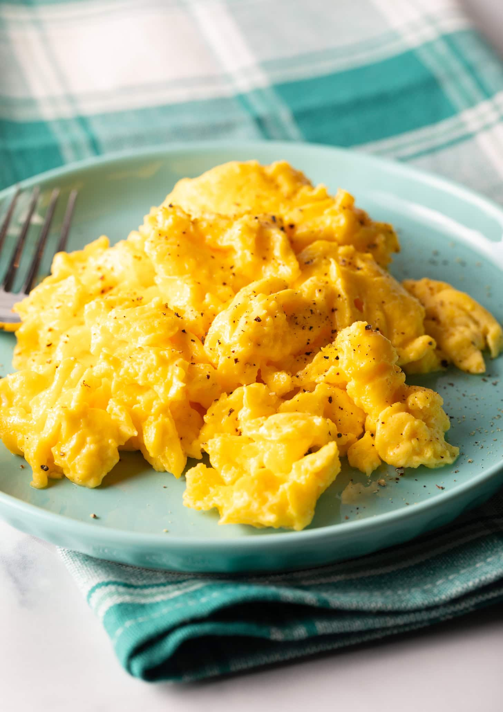

Scrambled Eggs Recipe
Home

Description:
This scrambled eggs recipe will list out all the required
ingredients along with step by step instructions to complete
the recipe.
The result should be a nice soft and fluffy scrambled egg,
as depicted in the picture above.
Ingredients:
- 4 large eggs
- 3 table spoons of half & half
- 1 tablespoon butter
- Salt and black pepper
Steps:
- BEAT HARD: Set out a mixing bowl. Crack the eggs into
the mixing bowl and make sure that there's no eggshell
in the bowl. Add the half-and-half to the bowl. Use a
hand crank eggbeater or a whisk to beat the eggs
vigorously until light and frothy
- LOW HEAT: Set a small nonstick skillet over low heat.
Place the butter in the skillet and allow it to melt.
- Once the butter has fully melted, whisk the eggs again
to make sure they are as frothy as possible when going
into the skillet.
-
LIFT THE PAN: Lift the pan off the heat and swirl the
butter around the pan. Pour the frothy eggs into the
skillet while the pan is lifted, so that its first
contact with heat is very gentle.
-
MOVE TO THE CENTER: Set the pan back on the burner and
use a rubber spatula to gently move the eggs towards
the center of the pan. Do this in a circular pattern,
from the outer edge of the pan to the center, the
entire time the eggs are cooking.
-
UNDERCOOK: Once the eggs are 85% cooked, turn off the
heat. Salt and pepper the eggs, gently stir again, and
move them to a plate while they still look slightly
undercooked, about 90% cooked. The eggs will continue
to cook as they sit on the plate. If they look fully
cooked while they're in the pan they will be a bit
more rubbery on the plate. Taking them off the
heat while they still look wet will ensure your
eggs are perfectly soft on the plate.
- Serve immediately!